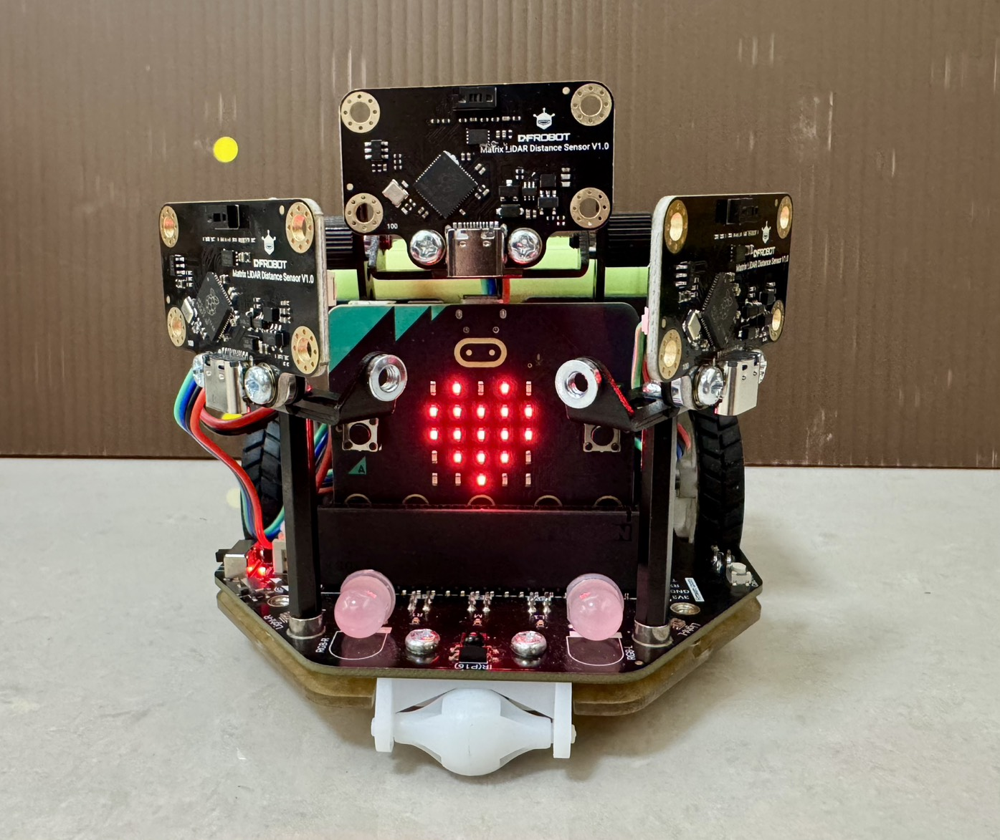
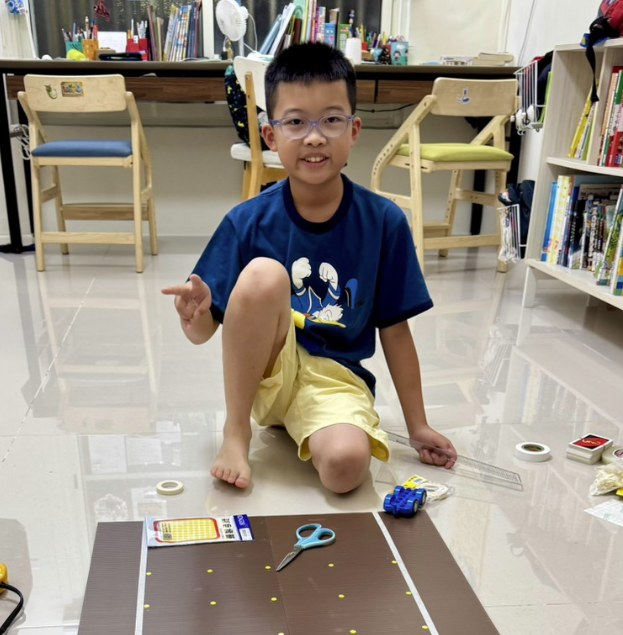
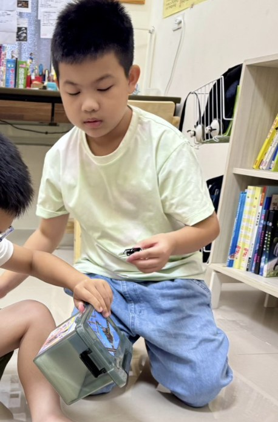

感測器可靠嗎？
一黑夜和強光，會不會讓雷達看錯距離？
發現：正常日光燈、手電筒強光、關燈全黑三種情況，30～150 cm 的平均誤差都在 4.1 cm 以內。
所以下一步：換一個更難測的目標。
餐廳的送餐機器人遇到人會自己停下、繞路。它是怎麼「看」的？
南投山路常有石虎被車撞。石虎毛色深、常在晚上出沒，車子很難看見。
汽車轉彎時，前擋風玻璃旁的 A 柱會擋住行人，駕駛看不到。
小車能不能在黑夜、在轉彎的死角裡，也看見生命並停下來讓路？
發現：正常日光燈、手電筒強光、關燈全黑三種情況，30～150 cm 的平均誤差都在 4.1 cm 以內。
所以下一步：換一個更難測的目標。


發現：40 cm/s 時平均要滑 7.06 cm 才停下，再加 10 cm 安全距離，預警距離訂為 17.06 cm。
所以下一步：把這些數字寫進程式，讓小車上路。

發現：雷達 6 趟全部成功；超音波在 40 cm/s 時會把山壁當成障礙物，煞車和轉向都失敗。
所以下一步：從一條路走到一整張地圖。
發現：加上「黑名單記憶」和「足跡懲罰」，小車會記住哪裡走不通，自己退出死胡同。測了 10 次以上，每次都成功。
所以下一步：轉彎時旁邊的死角怎麼辦？
發現：只有前雷達時，小車左轉直接撞上行人；加裝左右 45° 兩顆雷達後，小車會先停下，等行人走過再繼續。三雷達版測了 10 次以上，每次都成功。
所以下一步：開法要更像真的車。

洪老師提醒我們：真的車不會每走一格就停一下，也不會原地轉 90 度。我們畫圖討論後，把五-B 和六的程式改成提早一格開始轉彎、外輪快內輪慢地畫弧線，遇到石虎或行人一樣停、看、聽。
結果：（待測）
電腦收到的數據變成亂碼，字元疊在一起。
發現是資料傳太快會「塞車」，我們決定每筆資料之間排隊等 0.2 秒，數據就乾淨了。
AI 用理論猜：雷射光會像手電筒一樣擴散，裝在 15 cm 也掃得到石虎。
我們自己量，15 cm 高每個距離都是 0 次測到。實驗推翻了猜測。
轉彎時雷達讀取要花時間，小車一轉就超過 150 度。
改用 micro:bit 的絕對時間碼表，只累計「馬達真的在轉」的時間。
面板上的跑馬燈文字要跑 1 秒，小車因此來不及煞車。
改成瞬間顯示紅燈、綠燈圖示，看到行人就能立刻煞車。
電池只剩一格，小車只會直走，一路撞上牆壁。
我們的轉彎和走格子都是靠時間控制，電不夠就全部亂掉。現在規定每次測試前一定充飽電。
「真的車不會原地轉 90 度，也不會每格都停。」
畫圖討論後，把五-B 和六改成連續前進、弧線轉彎的版本。

比較常寫程式。最後的實驗裡，他拿著鋼彈模型當過馬路的行人。

比較常組裝小車和開車。左右兩顆往外轉 45 度的雷達，是他裝上去的。
搭場地、組小車、寫程式、每一次測量，都是我們兩個一起完成的；遇到問題的時候，我們會一起想、一起試。更多關於我們 →
每個點都量 5 次。數據直接讀取我們的實驗數據總表，表格更新，這裡也會跟著更新。
資料來源：實驗數據總表「實驗一：夜盲症測試」・5/14 完成
我們也發現：棕色霧面紙板在 120 cm 以上，雷達一樣量不到，因為深色會吸收光線。這讓我們知道雷達也有極限。
資料來源：實驗數據總表「實驗二：保護色與材質」・5/20 完成
資料來源：實驗數據總表「實驗三：最佳視角測試」・5/17 完成
資料來源：實驗數據總表「實驗四：生死一瞬間」・5/21 完成
資料來源：實驗數據總表「實驗五-A：受限車道（模擬山路）」・5/27 完成
空地上的路障是正面擺放的，兩種感測器都看得到，所以路線和時間幾乎一樣。兩者真正的差別，在實驗二的黑色絨毛和實驗五-A 的窄山道。
寫程式的時候，我們已經測試超過 10 次，每次都成功；下面是有完整紀錄的趟次。想看小車一格一格怎麼想，可以到數據中心的「AI 戰術大腦回放」自己按播放。
資料來源：實驗數據總表「實驗五-B：開放空地（24 宮格地圖）」・5/24 完成
寫程式的時候，三雷達版已經測試超過 10 次，每次都成功；逐趟紀錄整理中。
資料來源：實驗數據總表「實驗六：A柱死角與動態禮讓測試」・8/30 完成
點照片可以看大圖。每個任務的完整過程在開發日誌裡。


每個實驗的影片都放在各個實驗的頁面裡。
我們依照教育部《國民中小學學生學習評量及作業使用生成式人工智慧注意事項》使用 AI：由爸爸用自己的帳號全程陪伴，我們一起討論、判斷 AI 的回答對不對，並在洪瑞成老師指導下進行。5～9 月使用 Gemini，10 月起使用 Claude，協助我們把想法寫成程式、整理數據和網站。所有實驗、量測和程式邏輯的決定都由我們自己完成。完整說明在關於我們。